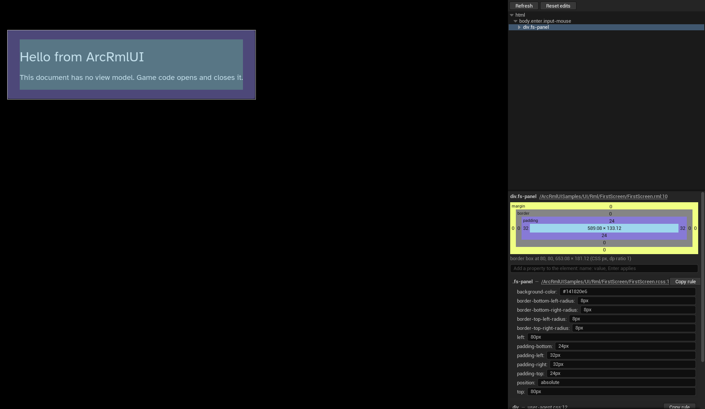

Debugging layout¶
The inspector shows what a running document is made of: its element tree, the size and position of one element, and every style rule that reaches it, each with the file and line it came from. Use it when an element has the wrong size, the wrong colour or no effect from a rule you wrote. It exists outside Shipping builds.

Open it¶
- In a game: open the console and type
ArcRml.Inspect <Path>with the package path of an open document, such as/ArcRmlUISamples/UI/Rml/FirstScreen/FirstScreen.rml. The command toggles: the same path closes it, another path moves it to that document, andArcRml.Inspectwithout a path closes it. A panel opens at the right of the game viewport and the mouse cursor is shown. While it is open a click in the game viewport picks an element and does not reach the document. - In the editor: the Inspect button of the editor preview toolbar picks in the preview, and the Inspector panel shows the result. The preview does not need a game.
Closing the inspector also resets the edits you made in it (see Try a value).
Pick an element¶
- In the view: move the pointer over the document and the element under it gets a red outline; click to select it.
The pick follows geometry only: the topmost element whose border box holds the point.
pointer-events: nonedoes not hide an element from it. A::beforeor::afterbox is not picked: the click selects its parent. -
In the tree: click a row. The row's element is outlined in the view while the pointer is on the row, and a double click on a row goes to its source line: in the editor it opens the file there, in a game it copies
file:lineto the clipboard. A row has the tag, then#idand.classnames; a text node shows its text in quotes. A dimmed row is not a plain visible element. These are dimmed:- text;
- a generated
::beforeor::after; - a scrollbar part;
- an element that is not in the document tree;
- an element with
display: noneorvisibility: hidden, also through an ancestor.
The selected element is drawn in the view with its content, padding, border and margin boxes.
Read the selection¶
The panel shows, top to bottom:
- The element and its source. The label, and the file and line where the element is written. An element that no
source line made shows "no source line". In the editor the link opens the file at that line; in a game it copies
file:lineto the clipboard. - The box model. Margin, border and padding widths around the content size, then
border box at X, Y, W × H (CSS px, dp ratio R). The values are CSS px as written in a style sheet, not screen pixels: the layout size in screen pixels divided by the dp ratio, the UE DPI scale of the view (Screen size, cursor and players). The border box is where the element sits in the view. - The rules. Each rule whose declaration the element uses, by selector with its file and line, and the properties
it sets. First comes element style, the inline style, then the rules with the highest specificity first. A rule
from
user-agent.cssis a default every element gets, like a browser's. A group headed inherited from lists the inherited properties the element gets from an ancestor, only the ones the element does not set itself.!importantis marked after the value.
Refresh reads the tree and the selection's styles again; press it after the document changed. The tree follows changes of the document by itself.
Try a value¶
Type a new value into a property field and press ++enter++, or write name: value into the Add a property field
and press ++enter++ (a closing ; is accepted). The value goes to the element's inline style in the running
document, so you see the result at once. The status line under the buttons answers:
| Status | Meaning |
|---|---|
name: value applied |
The element has the value. The property name is tinted in the list. |
'name' is not a known property |
No property of that name exists. |
'value' is not a valid value for 'name' |
The name exists and the value does not parse. |
'name' is ignored by RmlUi |
The engine accepts the name and drops it. |
Write the property as name: value |
The field has no : or no value. |
Edits are not written to a file. They stay when the document is rebuilt and are applied to the same element again. Reset edits puts back every original value; closing the inspector does the same. To keep a change:
- Press Copy rule on the rule you want to change. It copies that rule's text from the
.rcssfile with your edits merged in. For the element style, or a rule without a source file, it copies your edits asname: value;lines. - Paste it over the rule in the style sheet. If the file changed since the document loaded, the status line says
No rule opens at <file>:<line>; the file changed since it was loaded.
ArcRml.InspectEdit <Path> <selector> <property> <value> does the same without the panel: it selects the first element
that matches the selector, applies the edit and logs applied or not applied with the element's tree path. Words after
<property> are joined as the value.
Write a snapshot to the log¶
ArcRml.InspectDump <Path> writes the inspector's view of the selected element to the log, category LogArcRmlUI (in
the editor, the Output Log window), after the next UI update of the document.
ArcRml.InspectDump <Path> <X> <Y> selects the element at that point of the view (view pixels, not CSS px) first, so it
needs no panel. The document has to be open, else the log has ArcRml.InspectDump: '<path>' is not open.
The lines, each starting ArcRml.InspectDump::
- the document title, the element count, the canvas and content rect in pixels and the dp ratio (the UE DPI scale);
selected, the element's tree path, its ancestors from the root astag#id.class, and its source line;- the box in view pixels: margin, border, padding, content and the transformed border, the margin, border and padding edges, and the fragment count;
- every rule as
rule '<selector>' at <file>:<line> (specificity N), orrule inline style (specificity N), followed by its properties.
Without a selected element it logs no element selected; a point with no element logs no element of the document at that
point. The dump is the form to paste into a bug report, and the only place that prints specificity.
The dump is a console command, so a script that can run console commands can send it, such as a Blueprint
Execute Console Command node after the document opened.
Recipes¶
An element has a size of 0 px¶
Select it, in the tree if you cannot find it in the view, and read the content size and the border box.
- A dimmed row can mean the element is not displayed. Look in the rules for
display: noneorvisibility: hidden, on the element or on an ancestor whose row is dimmed too. - A displayed element with 0 in one direction takes that size from its rules, its content or its parent. Look in the
rules for
width,height,min-*andmax-*, and select the parent to read its content size. - Type
width: 100pxorheight: 100pxinto Add a property. If the box grows, the element lacked a size rule.
Which rule wins¶
Each property appears once, under the rule whose value the element uses: a declaration that lost the cascade is not
shown. The list puts the element style first, then the rules with the higher specificity; !important is marked after
the value. ArcRml.InspectDump prints
specificity N for every rule when the order is not enough. A rule you expected is missing from the list when its selector
does not match the element, when every property it sets lost to another rule, or when the declaration was dropped as the sheet loaded: the log has a warning for it
(Validation).
A property has no effect¶
- Is it in the list? A property that is under no rule was dropped at load or never reached the element.
- Type it into Add a property.
is not a known propertyandis ignored by RmlUiend the search. - Look the property up in CSS support: parsed, no effect means nothing reads it, and the Not supported list names properties that do not exist.
An element you cannot pick¶
- It is not displayed or has
visibility: hidden: the view's pick skips it. Select it in the tree. - Another element is on top of it. Pick the one on top, or select the element in the tree and read its border box.
- It is a
::beforeor::afterbox: the view selects its parent. Select its row in the tree.